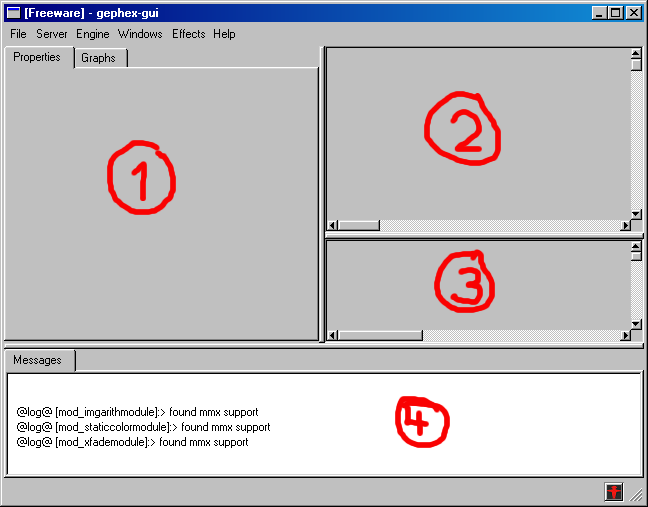
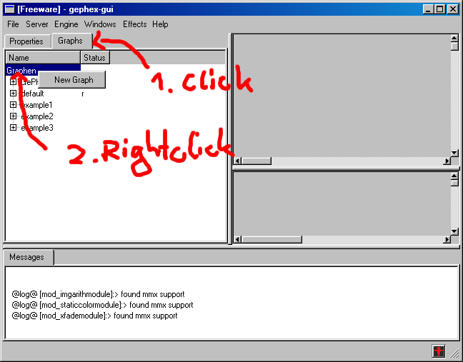
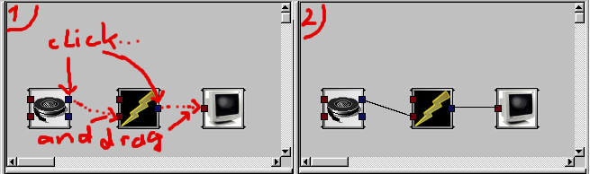
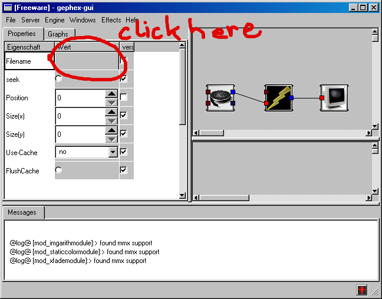
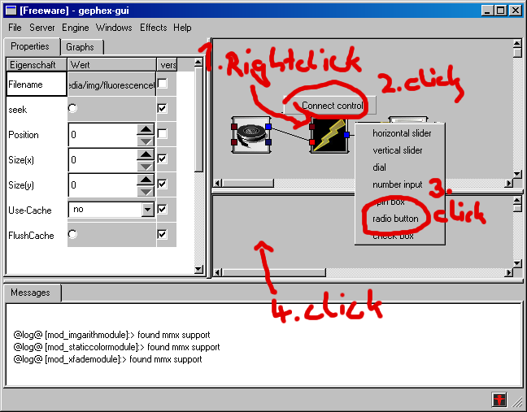

The GePhex Book
Martin Bayer
Georg Seidel
Copyright © 2002, 2003 Martin Bayer
GePhex is an interactive effect system for video jockeys. The effects can be controlled via external devices like joysticks, webcams or midi-devices. New effects are designed in a GUI (Graphical User Interface) by composing basic effect into more complex ones.
This book gives new users an introduction to the GePhex system. The basic concept of effect-graphs is described. The reader learns how to use the system and the steps to create new effects. One section is for developers who want to create new effect and type plugins.
This document is free; you can redistribute it and/or modify it under the terms of the GNU General Public License as published by the Free Software Foundation; either version 2 of the License, or (at your option) any later version.
This document is distributed in the hope that it will be useful, but WITHOUT ANY WARRANTY; without even the implied warranty of MERCHANTABILITY or FITNESS FOR A PARTICULAR PURPOSE. See the GNU General Public License for more details.
You should have received a copy of the GNU General Public License along with this program; if not, write to the Free Software Foundation, Inc., 59 Temple Place, Suite 330, Boston, MA 02111-1307 USA
- Table of Contents
- 1. Introduction
- 2. Installation
- 3. Basic Concepts
- 4. Guided Tour
- 5. Example Graphs
- 6. Module Reference
- 7. Type Reference
- 8. Developer Information
- 9. Old text describing GePhex
- List of Tables
- 3-1. Tags for the 0.0.4 Release Cycle
Chapter 1. Introduction
What is GePhex
GePhex is a software-based interactive video-effect system. Video jockeys can use this system to modify or recombine existing footage or create new video effects in an interactive process. External devices like joysticks, midi-keyboards or webcams can influence the realtime video generation.
The software allows the construction and modification of video-effects on different levels:
The users view of a video-effect is a signal-flow graph with sources, modifiers and destinations. The signals in these effect-graphs are typed. That means the inputs and outputs of the modules have types e.g. video-signal, color or number. The user can create complex effects by connecting inputs and outputs of the same type.
Not all inputs must be connected. The user can change the value directly at the inputs with the GUI. This allows the video jockey to save so called snapshots of effect-graphs and to switch between these parameter sets.
The generation process can be influenced by the environment with two methods. Special source-modules inject data from hardware devices like midi-devices, webcam or joysticks. It is also possible to connect special GUI elements with the inputs of a module.
Developers can extend the system with the plugin mechanism for modules and types.
GePhex's History
The project started in the late summer 2001.
In autumn 2002 was the first public vjing session at the fmi party on the campus of the university of Passau, Germany.
In autumn 2003 there was another public session in vienna.
GePhex's Features
It is Free Software. You can use, distribute and modify GePhex under the terms of the GPL.
GePhex is a multi platform project. Supported operating systems are Win32 and Linux. Ports to the BSD operating systems are planned.
Security Note
With the default configuration the GePhex engine listens at the tcp port 6666. The GUI connects to this port and controls the engine. There is no authentification necessary to connect to the engine. This could be a security hole if used in a hostile environment. Never start this software as root and don't use it in an network that is connected to the internet without protection (e.g. a firewall).
GePhex's Components
The Engine
The engine can be started on the console with the gephex-engine command. At the moment there are no command-line options and environment variables that influence the behaviour. All options are set in the configuration file ~/.gephex/engine.conf. If no file exists a default configuration file is created.
conf {
module_dirs=[/usr/lib/gephex/modules/]
type_dirs=[/usr/lib/gephex/types/]
graph_dir=[/home/martin/.gephex/graphs/]
ipc_type=[inet]
ipc_unix_node_prefix=[/tmp/gephex_socket_]
ipc_port=[6666]
} |
The GUI (graphical user interface)
The gui can be started on the console with the gephex-gui command. At the moment there are no command-line options and environment variables that influence the behaviour. All options are set in the configuration file ~/.gephex/gui.conf. If no file exists a default configuration file is created.
conf {
ipc_type=[inet]
ipc_inet_hostname=[localhost]
ipc_namedpipe_servername=[.]
ipc_unix_node_prefix=[/tmp/gephex_socket_]
ipc_port=[6666]
} |
Chapter 2. Installation
Since GePhex is free software you can get the source code and compile it on you own. Or if you have one of our core platforms you can download the precompiled binaries from our website.
Building from the Sources.
It is not very difficult to compile your own version of GePhex. If you already installed software with "configure" and "make install" there should be no big surprises for you here.
Before we can start we must get a version of the GePhex source code. There are official releases as tarballs on the website and the developer versions available via CVS.
Getting the latest CVS Snapshot
To get the developer version from the cvs you need to connect to the server. When prompted for the password of the anonymous user, leave that empty and press the enter key.
bash@host:~$ cvs -d:pserver:anonymous@cvs.sourceforge.net:/cvsroot/gephex login
Logging in to :pserver:anonymous@cvs.sourceforge.net:2401/cvsroot/gephex
CVS password:
bash@host:~$
|
The sources are stored in the GePhex module. To get a clean copy use the checkout command. This creates the GePhex subdirectory with the source tree.
bash@host:~$ cvs -z3 -d:pserver:anonymous@cvs.sourceforge.net:/cvsroot/gephex co GePhex
cvs server: Updating GePhex
U GePhex/AUTHORS
U GePhex/BUGS
U GePhex/ChangeLog
U GePhex/INSTALL
...
|
Getting a Distribution-Tarball
Visit our download page and get a release. Let's assume the tarball is called gephex-0.0.4.tar.gz. Just unpack the file.
bash@host:~$ tar xvzf gephex-0.0.4.tar.gz
gephex-0.0.4/AUTHORS
gephex-0.0.4/BUGS
gephex-0.0.4/ChangeLog
gephex-0.0.4/INSTALL
...
|
Bootstrapping
This step is only necessary when you got the sources from CVS. The distributed tarballs are already "bootstrapped".
To do the bootstrapping, you need some additional software. This includes autoconf and automake and some additional packages to build the documentation etc.
 | When installing from a tarball, this software is *not* needed!
|
GePhex uses autoconf and automake for the configuration and generation of the Makefiles. Use the script bootstrap.sh to create the build-system without further intervention.
bash@host:~$ cd GePhex bash@host:~/GePhex$./bootstrap.sh running aclocal ... running libtoolize --force ... running autoheader ... running automake --add-missing --copy ... running autoconf ... ./configure has been succesfully built! See './configure --help' for available options |
Configure and Build
This step configures the build system for your system. You need the following libraries to get all the features of GePhex:
At the very least you should have libqt and xlib installed. If not the GUI will not be built.
At this point you can choose the location where the software should be installed. Some special options to include/exclude features can also be activated here. E.g. if you have a recent x86 processor you could enable the faster MMX implementation for some modules.
To see the available options you can use the configure script:
bash@host:~/GePhex$./configure --help
`configure' configures this package to adapt to many kinds of systems.
...
Installation directories:
--prefix=PREFIX install architecture-independent files in PREFIX
[/usr/local]
...
Optional Features:
...
--enable-mmx Turn on MMX support. Still runs on x86 that don't
have MMX!
--enable-serialize-framebuffer
Serialize the framebuffer type (for previews in the
gui).
Optional Packages:
...
--with-effectv=dir Compile with effectv. Needs effectv source files.
You must provide the effectv src dir. Example:
--with-effectv=/home/georg/effectv-0.38
...
|
So let's do the actual configuration:
bash@host:~/GePhex$ ./configure --enable-mmx --with-v4l --prefix=/usr
checking for a BSD-compatible install... /usr/bin/install -c
checking whether build environment is sane... yes
checking for gawk... gawk
checking whether make sets $(MAKE)... yes
checking for g++... g++
...
|
Lets now start the actual build process. Depending on you system this could take a long time.
bash@host:~/GePhex$ make
make all-recursive
make[1]: Entering directory `/home/martin/code/gephex/GePhex'
Making all in base
make[2]: Entering directory `/home/martin/code/gephex/GePhex/base'
Making all in src
make[3]: Entering directory `/home/martin/code/gephex/GePhex/base/src'
...
|
Installation
The following command installs the software on your system. The two binaries for the user interface gephex-gui and the rendering engine gephex-engine will be installed in the PREFIX/bin directory and the location of the plugins is in PREFIX/lib/gephex.
bash@host:~/GePhex# make install
|
| You might need to be root to install (depending on the installation prefix you chose).
|
Create your own Debian Packages
TODO: Does this work in the sources from a dist tar.gz, too?
Users of the Debian GNU/Linux OS can create Debian binary packages from the source and install these with dpkg. Just change in the root to the Source tree and invoke the dpkg-buildpackages. After a successful build you can install the generated packages.
bash@host:~/GePhex$ fakeroot dpkg-buildpackages bash@host:~/GePhex$ sudo dpkg -i ../gephex*.deb |
Precompiled Versions
Using our APT Repository
The Debian binary package format is the common way to install software on a Debian GNU/Linux system. Using the dpkg, a medium-level tool to install, build, remove and manage Debian GNU/Linux packages, the system stays in a consistent state after changes to the software installation or configuration. The proper deinstallation and upgrade to a other version of the application package is guaranteed.
Add the GePhex apt repository lines to your /etc/apt/sources.list and install GePhex with apt-get:
bash@host:~$ sudo cat >> /etc/apt/sources.list deb http://gephex.sourceforge.net/debian/ stable main bash@host:~$ sudo apt-get install gephex |
Chapter 3. Basic Concepts
The three States of Graphs in the Renderer
The Renderer knows three states for a graph:
The graph is not loaded. No internal state of the modules is stored and obvious no calculation is done in this state.
The graph is loaded in the renderer. The Modules remember their internal states e.g. the framebuffer of an xfader with loopback. But now calculation is allowed in this state.
Only in the state active are any calculations done.
Convention for tagging Releases in CVS
All release-related tags should start with RELEASE followed by the version number and one of the states alpha, beta and release followed by a sub-state number for the pre-release states.
Chapter 4. Guided Tour
Starting GePhex
UN*X
You can start GePhex by executing gephex-engine and gephex-gui in a shell (in that order).
If you chose your own prefix for the install, make sure the binaries are in the path.
WIN32
Just go into the bin directory of your GePhex directory and execute the gephex-engine and gephex-gui (in that order).
The GePhex Graphical User Interface

The GUI (just started).
Structure of the GUI
As you can see in the image, the GUI (Graphical User Interface) is divided into four major areas. The areas are marked with a red pen.
1: Info-window. Used for properties of effects and for loading and saving effect-graphs,
2: Graph-window. Used to edit effect-graphs.
3: Control-window. Used to control running effect-graphs.
4: Message-window. Used to display error and warning messages.
The First Graph
The most important concept for using GePhex is that of an effect-graph. An effect-graph is a number of simple basic effects, combined to perform a more complex effect.
Since GePhex works with graphs, we have to tell it which graph we want to edit. Do this by clicking on the "Graphs" tab in the info-window. To create a new graph, right-click on the "Graphs" item inside the tab (see next image).

Creating a graph
When the context-menu opens up, just select "New Graph". Enter "first" in the dialog.
Choosing the name of the graph
Now you see another item called "first" in the tree-view below "default". This is our new graph. To activate it, click on the arrow (or plus symbol) left to "first". Click on the appearing child item "default".
| This child item is a "snapshot" of the graph. For now you just need to know, that you need one active graph with one active snapshot in order to create an effect. |
The letters "r" and "e" tell you that graph "first" is active (with current snapshot "default").

Activating the graph
Adding Effects to the Graph
Now we have created a new graph. But it is not very useful yet, because it is empty. So let's create some effects.
To do so, open the "Effects" menu in the top-level menu-bar. Choose "Sources"->"Image Source". Then click into the graph window as shown in the next image.

Adding an basic effect
Do the same for "Effects"->"Outputs"->"Image Output" and "Effects"->"Filter"->"FlashFader". Arrange them as in the next image (You can simply move them around with the mouse).
The red boxes on the left side of the basic effects are inputs, the blue buttons on the right are outputs.
Connect the effects as shown in the next picture:

Connecting effects
The graph we have created so far is still very simple. In fact, you would not call such a graph an effect at all. What it does is simply loading a bitmap, eventually flashing it and displaying it to the screen.
You can think of this graph in terms of data flow: data comes from a source (the image source), flows through the flash-fader filter and is displayed in the sink (the image output).
Configuring the Graph
This is simple. We just choose a bitmap. Right-click on the "Image Source"-effect and choose "Properties" in the context menu. Now the info-window displays the properties of the image source:

Properties
Click on the button next to "Filename" and choose a nice image file.
Running and controlling the Graph
Simple again. Just click on the little red fellow on the bottom right. You should see the output window opening and displaying the bmp file you chose. To inform you that it is running, GePhex turns the red fellow to a green fellow.
To control the flash-fader effect we must add a control at the upper input of the flash-fader. The following picture explains how you can add a control to an input:

Creating a control
Just try it!
| GePhex must be running for the control changes to take effect!. |
Saving the Graph
Click on the "Graphs" tab in the info-window. Right-click on "first" and choose "Save Graph". Done. The graph will be already there when you start next time.
Chapter 5. Example Graphs
Installing the Examles (Un*x version only)
Copy the files in [your gephex source dir]/examples/graphs to ~/.gephex/graphs. The ~/.gephex directory is created the first time you start GePhex.
Example1: Tunnel-Vision
Shows how to use the tunnel.
Try to attach the frbinmodule (Image Source) module instead of the isingnoize. (Don't forget to choose an image or video as shown in the Guided Tour).
Example3: A simple Feedback Loop
Try to change the zoom and rotation of the rotozoom-module. If you choose the right parameters, it should look like if you film a monitor that displays what you film...
Chapter 6. Module Reference
Generators
ifsmodule
Linear iterated function systems are a fractal type. The module renders these kind of ifs parameter sets to a image.
This IFS fractal is rendered in gray scale mode.
Input Modules
In this section all modules are listed, who's main goal is to inject data in from external sources in signal graph.
Videoplayback (avifilemodule)
Description
There are different videofileformats. Some can be streamed via net. Others allow random access to each videoframes. For some there is a normative standart. mpeg 1,2 and 4 are an example for these kinds. avi, quicktime or real video are (re)defined by their vendors. In most cases the video format is just a wrapper for a video stream encoded with a concrete videocodec.
The avifile library extracts the compressed videodata from the fileformats and and provides with the help of its plugins a lot of codecs to decode the framesequences. The actual support for one format depends on compile time options and the existance of other librarys on you system. Further information is provided at the homepage of the avifile project.
Inputs
The first input is the name and path of the videofile.
There are two way to controll the playbackposition. If the seek input is false the module plays the film sequential frame by frame. The playback starts at the the beginning and plays the sequence once. If the seek input is true the playbackposition is controlls by the position input. A zero means jump to the beginning and a 1 to the end. If a signalgenertor is connected to the position the film can be played reverse, faster or slower just depending on the parameters of the generator.
Outputs
The first output is the videostream.
The second output is the playbackposition in the stream. If the seek is active this is the same as the seekposition but if we disabled seeking this position follows the playback. This output enables looping of parts or setting breakpoints at an arbitrary position.
Notes
Many codecs don't allow fast seeking to an arbitrary video position. This isn't a problem for standard video playback applications. User of a video effect systems want to reverse the playback direction and jump to an random position in the videofootage. Sequential playback is borring. Watch you favourite movie in sine waves!
For random access to the video footage it is often nessecary to reencode the material to framebased codecs like mjpeg. Tools like mencoder of virtual dub are very helpfull for these tasks.
Video for Linux (v4lmodule)
Description
It is possible to attach serveral different videoinput devices to the computer. Video signals from analog camcorders or vcrs are typically injected by a framegrabberadapter on the PCI-bus. Digital cameras or low cost webcams can be connected via USB(2) oder Firewire.
Most operating systems with multimedia capabilities provide a convinience layer between the videodevice drivers and the application. All devices are handled independent of the connection typ in a similar fashion.
Video4Linux (V4L) is the video capture/overlay API of the linux kernel. It is based on the programming interface introduced by the bttv driver. This is a consumer framegrabber chip used in most tv cards.
In future linux kernel series this api will be replaced by the successor Video for Linux Two. At the moment no GNU/Linux distribution supports this new API in their standard kernels.
Support for the V4L2 API is planned.
Inputs
The first input is the filename of the video device. In most cases this is /dev/videoX where X is the number of the device. A setup with a webcam and a bttv card e.g. uses the devicefiles /dev/video0 and /dev/video1.
It is possible to switch the device during rendering. But with some hardware/driver combinations this results in one or two broken frames.
The other two inputs tell the framegrabber the image resolution. A resolution 0,0 forces the grabber to choose any supported resolution.
Output
The captured frames are sent to the output. In case of an invalid videodevice, unsupported image size or any other error a black, full transparent one pixel sized image is returned.
Notes
The current version of this module is tested with the 2.4.20 kernel drivers of the the usb webcam PCVC740K "ToUCam Pro" from Phillips and the pci bttv848 frame-grabber card win-TV radio.
Further informations about video4linux driver- and user-space programming can be found in the kernel documentation (kernel-source-2.4.20/Documentation/video4linux/API.html and kernel-source-2.4.20/Documentation/DocBook/videobook.tmpl) and in the video4linux mailing list.
Chapter 7. Type Reference
NumberType
64 bit IEEE floating-point value.
FrameBufferType
32-bit BGRA Framebuffertype. Orientation is top-down (topmost line is first line in memory).
Chapter 8. Developer Information
The last chapter described the core effect-modules and data-types included with the GePhex package. None of these are hard-coded in the GePhex engine. All of them are plugins that are loaded at startup time.
This part describes the design for the plugin interfaces.
The main design goal for these two interfaces was simplicity. It should be possible for a programmer to create a new effect within hours and not days. For the modules there exists a code generator which generates Makefiles, stub code and templates to free the programmer from cut and copy operations.
Adding new data types
The focus of the GePhex Framework are streams of video-data. The video streams flow from video sources to the output sinks. To control this flow other types of streams are needed. From simple numbers for controlling the video mixers to complex data types for some special effects, we need different types in the data-flow graph.
The system must be extendible to audio, color-palettes and whatever will be interesting in the future. The types in GePhex are just plugins. You can extend the gephex system with support for new types by providing a shared library, that exports the implementation of a special c-API. The GePhex system loads this library at runtime and creates a type class.
Recently the midi-type was added. And now we have a module that injects the incoming data from the midi interface into the signal graph. Another module converts the midi-type stream and several number-type outputs. This way, effects with number-types as inputs can be controlled via midi-devices. No changes or rebuilds of the GePhex base system were necessary to add this functionality.
The modules receive typed values and generate others. Why does the engine need to know anything about the types? Isn't it enough that the affected modules know about the type?
It is right that the engine doesn't need many internals of the types to do its job, but there are some actions the engine must take care of:
Provide some informations like the name to the user
The renderer must create default values for unconnected inputs
The value of type objects must be transfered in a serialised form to the user front-end
These the type plugins are like the module plugins shared libraries. They export pointers to functions. The engine then calls these functions if necessary. The symbol names, the signature and the semantic of these are described in the next section.
The c-API
A GePhex data type plugin is a shared library. There is exact one data type in each library file. The file suffix is .so on the Unix platforms and .dll on ms windows system. Each library exports a set of function symbols as defined in the following section.
The GePhex type API consists of a required and an additional part. Every type plugin must implement the required part. The loader of a type plugin must ignore plugins that don't export these symbols. By implementing functions of the additional part the serialisation and automatic subtype conversion functionality can be enabled. But not for all effects these features are necessary.
The first group of function are independent of type instances. The functions init and shutdown handle the (un)loading of the plugin. getInfo and getSpec allow the host application to query information about the type from the plugin.
The second group is instance based. There are functions to create and destroy type objects like newInstance and deleteInstance. Others assign and convertType instances. The created instances are identified by objects of the type TypeInstanceID this is a unique id with the size of a pointer. It is up to the user of the type plugin to ensure not to mix type object identifier and functions of different types.
There are two optional features a type can provide: (de)serialisation and type attributes.
Type attributes describe different representations of values and allow to convert between them. A color is can be in the RGB, YUV or HSV color-space. The color doesn't change if the convert between them. It is just the representation that changes. A color type can have a attribute color-space and some functions to convert transparent from one space to another. Types that have attributes must implement convertType and attributesEqual.
To store type instances or to transfer them via network it isn't enough to store/transfer the TypeInstanceID we must store the real value not the identifier. The functions serialize and deSerialize convert type instances to a byte-stream and back.
Required methods
- Table of Contents
- init -- initializes the type plugin
- shutDown -- destructs the type plugin.
- getInfo -- querys the user description of the type
- getSpec -- Returns the spec string of type.
- newInstance -- creates a new instance of the type
- deleteInstance -- deletes a instance of the type
- assign -- Assigns the value of the source to the destination typeobject.
init
Description
This function initializes the type plugin. It must be called by the shared library loader after resolving all symbols. It may not be called if any error occures while loading the plugin. No other method of this type class may be called before calling this.
You can e.g. allocate static memory common to all types in this function to use a memory pool.
All resources allocated in init must be deallaocated in the shutDown function.
Return Value
The init function returns a 1 if the type could be initialized and 0 in case of an error. In case of an error no other function (not even the shutdown) may be called.
shutDown
Description
This function closes the type library. Before calling it all type instances must be destructed. It must be called before unloading the dll. After calling shutdown no other method of the type plugin may be called.
You should free all resources (memory, devices) allocated in init here.
getInfo
Arguments
- buf
This is a pointer to a buffer of size bufLen. This buffer can be modified by the method. If the buffer is big enough the info string is written in it.
- bufLen
bufLen is the size of the buffer buf in bytes.
Description
The getInfo function allows the caller to query some information about the type plugin. These are intended for the user presentation and not needed for rendering an effect. At the moment the caller can get a short description of the type. In the future extensions for i18n, icons and color information will be supported.
The semantic of this function is that the caller provides a pointer to an allocated array buf of size bufLen. If the infostring fits in that array the string is written in the buffer and the size of the zero-terminated string is returned. If the buffer is to small no changes to the buffer are applied and the needed size is returned.
The format of the information string is composed like the following example.
"info { name=Palette }"
|
<INFOSTRING> := info { (<ATTRIBUTENAME>=<ATTRIBUTEVALUE>)+ }
At the moment name ist the only attribute that is used.
Return Value
It returns the size of the 0 terminated string written in the buffer. If the buffer was to small to store all requested information the needed size is returned and the buffer stays unchanged.
getSpec
Description
This method returns the specification string of type. This is a c-string with some properties about the type. At the moment this is just the identifier of the type. It is neccessary that this id string is unique cause the type checking in the engine is based on this property.
For a type called IntType the c-string would look like this:
"typ_spec { name=typ_IntType; }"
|
<SPECSTRING> := typ_spec { (<ATTRIBUTENAME>=<ATTRIBUTEVALUE>)+ }
The name attribute is the only type property used in this version of the api.
Return Value
The method returns the specification data encoded as a zero terminated string. The pointer to this string is valid till calling shutDown.
newInstance
Description
The newInstance function creates a new instance of the type. The return value is an identifier with the same memory layout as a pointer. It identifies the typeobject in subsequent calls to the functions of the same type. In most cases this will be a pointer to the memory area allocated to hold the value of the object, but it is not garanteed that this is true. There are different identification mechanisms possible.
The type objects created by this constructor must be destroyed with a call to the same types deleteInstance function. Before calling shutDown all instances must be deleted.
The created type object has a value, the default value.
Return Value
The function newInstance returns a object with the size of a pointer that identifies the type object. This should only passed as an identifier to the type api methods of the same plugin. The caller must ensure not to mix these identifier with the ones of different types.
deleteInstance
Description
After using a type object for the last time it must be deleted to free all reserved resources like memory or temporary discspace. instance identifies the type object created with the createInstance function of the same type. The caller must ensure not to mix the type identifiers of one type with the functions of another type. After calling this method the object instance is invalid. The instance identifier mustn't used anymore. All type instances created with newInstance must be destroyed with deleteInstance before calling shutDown of their type.
assign
Arguments
- destination
The value of this type instance will be changed to the value of source.
- source
The value of this type instance is assigned to the destination instance. The value of source stays unchanged.
Description
source and destination are identifier for two type objects of the same type as the typeclass. After a call to this function the value of the source object stays unchanged and the value of destination is changed to the one of source. It is the callers task to ensure that both instances and the assign function have the same type.
Optional methods
- Table of Contents
- serialize -- serialize the value
- deSerialize -- assign the type instance the serilaized value
- attributesEqual -- compares attributes with the of one type instance
- convertType -- Assigns the value from src to dst and changes the attributes while doing that.
serialize
Arguments
- instance
The value of this type instance will be serialized in the buffer. The value of instance stays unchanged.
- buffer
This is a pointer to an buffer with the size bufferLen. If the buffer is big enough the value of instance will be stored serialized in this buffer.
- bufferLen
This is the size of the buffer in bytes.
Description
The function serializes the value of instance into the buffer with the size bufferLen. If the buffer provided by the caller isn't big enough for the serialized value the buffer is not changed and the required size is returned. In the other case the value of instance is written as a bytesequence to the front of the buffer and the number of used bytes is returned.
This method is optional. If you want to provide the (de)serialisation functionality you must also implement the deSerialize method.
Return Value
If the buffer is big enough the number of written bytes is returned. In the other case the return value is the number of needed bytes.
deSerialize
Arguments
- instance
The value of this type instance will be changed to the one of the buffer.
- buffer
This is a pointer to an buffer of size bufferLen. The buffer holds the value that is assigned to the instance type object. The buffer will not be changed.
- bufferLen
This is the size of the buffer in bytes.
Description
The function deSerialize gets a buffer with a serialized value of the type and a instance of the same type. After calling this function the value of type instance is changed to the one in the serialized buffer. The caller must ensure that the value in the buffer, the instance typeobject and the deSerialize function have the same type.
This function is optional. A type plugin that provides (de)serialisation functionality must also implement the inverse function serialize.
attributesEqual
Arguments
- instance
The attributes of this type object are compared with the second parameter attributes
- attributes
These attributes are compared with the attributes of the instance.
Description
The attributesEqual function compares the attributes of instance with the attributes.
An example for an datatype with attributes is the framebuffer type. The resolution is an attribute of the type. There are also other attributes thinkable like colormodel (RGB, BGR, YUV) or the memory layout of the pixels. It must be possible to change the attributes without changing the abstract value of the type instance
This function is optional. Types with attributes must also provide the convertType function.
convertType
Arguments
- destination
The value of this type object is changed to the one of destination and the attributes of source will then equal attributes.
- source
The value of this type objects is assigned to destination while changing the attributes to attributes. The type insance source stays unchanged.
- attributes
These attributes are the new attributes of destination.
An example for a new datatype
The following chapter describes the necessary steps to implement a new datatype plugin. The new type will be a color palette. Mathematically this is is a mapping from an interval to the color-space. Since the standard color-space in the GePhex is the red-green-blue color-model with 256 discrete steps from each color-channel and a source space with 256 elements the palette can easily implemented as a array with 256 RGBA entries.
The implementation of the new type is split up in two files: palettetype.h and palettetype.c. The .c file includes the header and will be compiled to the shared library. In the .c files are the exported functions defined. The memory layout of the type and all helper methods resists in the header-file, cause all modules that use the type include the header and do not link with the shared library.
We define the memory layout of the new type in the header in a straight forward way:
typedef struct PaletteType_
{
uint_32 pal[256];
} PaletteType; |
The next step is to define the functions of the shared library. To keep it simple we'll implement only the necessary core methods: getInfo,getSpec,deleteInstance,newInstance and assign
The implementation of getInfo and getSpec are similarly for all types their propose is to deliver type-specific info strings to the caller. For the new type we set these two strings to:
"typ_spec { name=typ_PaletteType; }" and "info { name=Palette }".
const char* getSpec(void)
{
// return the specification string
return "typ_spec { name=typ_PaletteType; }";
}
int getInfo (char* buf,int bufLen)
{
static const char* INFO = "info { name=Palette }";
int reqLen = strlen(INFO) + 1;
// check if the buffer is big enough
if (buf != 0 && reqLen <= bufLen)
{
// the string fits in, copy it
memcpy(buf,INFO,reqLen);
}
return reqLen; |
The other three mandatory functions are the constructor, the destructor and assignment method. In the .c file we place simple wrappers to the real methods in the header. This ensures that modules and the engine use the same implementation since the modules include the type-headers and the engine loads the shared libraries.
void* newInstance(void)
{
return palette_newInstance();
}
void assign(void* dst,const void* src)
{
palette_assign((PaletteType*)dst,(const PaletteType*)src);
}
void deleteInstance(void* pal)
{
palette_deleteInstance((PaletteType*) pal);
} |
The actual implementation of the functions palette_newInstance, palette_assign and palette_deleteInstance is in the header.
The creation of a new type object is split into two functions: one for memory allocation and the other for initialisation it with the default value.
// initialise a palette with the default value
static __inline void number_initInstance(PaletteType* newType)
{
int i;
for(i=0;i!=256;++i)
{
newType->palette[i] = 0x00000000;
}
}
// allocate memory for a new palette type-object and initialise it
static __inline PaletteType* palette_newInstance(void)
{
PaletteType* newType = (PaletteType*) malloc(sizeof(PaletteType));
palette_initInstance(newType);
return newType;
} |
The assign method just copies the entries of the source array to the destination.
// assign the value of the source palette to the destination palette
static __inline void palette_assign(PaletteType* dst,const PaletteType* src)
{
dst->palette = src->palette;
int i;
for(i=0;i!=256;++i)
{
dst->palette[i] = src->palette[i];
}
} |
The type allocates memory the destructor must free this resource for reuse.
/* frees the allocated memory for a palette type object */
static __inline void palette_deleteInstance(PaletteType* pal)
{
free(pal);
} |
Adding new effect modules
The outputs are always initialised then update is called by the renderer. If you need an output with different attributes e.g. a frame with a different size you need to call the changeattribs? function. This will soon change. In future versions of the module API the renderer will query the outputs from the module and the renderer will change these before calling the update. This new behaviour will reduce code size in many modules with framebuffer I/O and fixes possible problems with modules and core created with different compilers using incompatible heap allocation strategies.
The C-API
A module is a shared library that exports some c functions. In the following section the necessary and the optional methods and their semantics are described.
The Core Methods
- Table of Contents
- init -- initialize the plugin
- shutDown -- closes the module plugin
- getSpec -- querys the spefification from the module
- getInfo -- query information for the user interface
- getInputSpec -- query a description of an input
- getOutputSpec -- query the specification of an output
- newInstance -- create a new instance of the module
- deleteInstance -- deletes a module instance
- setInput -- Sets the reference to the typeobject with the input value
- setOutput -- sets the referenz to the typeobject to assign the output value
- update -- process the inputs and assigns the results to the outputs
- getInputAttributes -- get type-attributes for input
Every module must implement these functions and export their symbol. The loader of the shared library must ignore modules with missing symbols.
init
Description
The init function initialises the module plugin. It is the first function called after loading the shared library. No other method may be called before calling this. It is only allowed to call this function once. The propose is to initialise resources common to all instances of this module class. For example allocation of a memory pool or querys for i/o devices.
If the return value signals an error the caller is not allowed to call another function. The proper handling of such a situation is unloading the shared library.
logger is a pointer to a function that is used to send log messages from the module to the engine. The first parameter of this function is the log level and the second is a const char pointer to the log message as c-string.
shutDown
Description
This function must be called before unloading the shared library. After invoking shutdown no other methods of the module may be called. In this method all class-wide resources allocated e.g. by the init function must be released. Before calling this method all instances created with newInstance must be deleted by calling deleteInstance
getSpec
Description
This function querys a specification string from the modules plugin. It stores the unique string identifier of the module, the number of inputs and outputs
mod_spec
{
name = mod_STRING;
number_of_inputs = UINT;
number_of_outputs = UINT;
deterministic = BOOL
} |
Return Value
The module specification string is returned as a pointer to a zero terminated char array. This pointer stays valid until calling shutDown.
getInfo
Description
For the dynamic creation of the user interface several information about the module class are necessary:
icon, name, effect-group
information about the inputs
information about the outputs
These information are const that means subsequent calls to this function must return the same value.
The semantic of this function is that the caller gives a pointer to a already allocated array buf of size bufLen and if the info string fits in that array the string is copied and the size of the 0 terminated string is returned. If the buffer is to small no changes to the buffer are applied and the needed size is returned.
Return Value
The function returns the number of written bytes or if the provided buffer was to small the minimum buffer size to store the info string
getInputSpec
Description
This function returns a pointer to a c-string which describes the input with the index number. The format of this specification string looks similar to a structure with default values in programming languages. The structure is called input_spec in it has the attributes type,const, default and strong_dependency.
"input_spec { type="typ_STRING"; const=BOOL; strong_dependency=BOOL; default=STRING}"
The order of the attributes is irrelevant. type is the unique identifier for the type-class of that input. With the const attribute signals the modules to the engine if it wants to change the value of the type object in the update function. If the input has set strong_dependency to true the engine must always set/update this input before calling update. The default attribute is the default value of the input when the module is new created. The format to specify this value is the format defined by the serialise and deserialise functions of the type-class.
The specification for some input could look like this :"input_spec { type=typ_NumberType const=true strong_dependency=true default=0 }"
getOutputSpec
newInstance
Description
By calling this method a new instance of the module class is created. The return value is a pointer to the instance. This pointer may only be used by the methods of the same module class. The caller must always ensure that these instance pointers fit to the corresponding functions. There needn't be any internal type check in the module implementation. After using this instance the allocated resources must be released by calling deleteInstance.
deleteInstance
Description
To free the allocated module instance resources the engine calls deleteInstance. It must call this destructor after last usage of the module instance. The instance pointer is invalid after this call and may not be used for further calls.
setInput
Description
The typeObject that holds the value for the input with index inputIndex of the module instance are set with this function. If the input is declared as const the module may not change the value of the type object because the engine can in this case provide it to another module as input.
setOutput
Description
A module doesn't create an output type-object with an update. It assigns the calculated values to the output objects provided by the caller. This method sets the type-object for the output with index outputIndex of the module instance.
update
Description
After all necessary inputs and outputs are set with the setInput and setOutput the engine can call update to assign the results to the outputs.
getInputAttributes
Description
If the type-class of an input supports type attributes an module can force an automatic conversion to fixed attributes. This method returns these attributes. If it returns 0 the input has no fixed attribute or the type doesn't support attributes. inputIndex is the number of the input the caller want to obtain the information.
Optional Methods
- Table of Contents
- getPatchLayout -- returns the patch-layout for the next update
- strongDependenciesCalculated -- query the needed inputs
To enable additional functionality the shared library must export some of the the following methods. The functions are used for optimisation:
In some cases not all inputs of a module need to be calculated. A switch for example has three inputs and one output. The control input decides which of the two other inputs should be assigned to the output. If the control input is known there is only one of the two inputs needed. We can eliminate the costs for calculating the subtree starting at the unused input by first calculation the control input and when we know its value only calculating one of the two other inputs.
To copy big type objects like images is expensive. In some cases we know that a module copies the value of an input to an output and makes no or little changes. In this case the engine can eliminate a copy if the input object is exclusively used by only one module.
getPatchLayout
Description
This function returns the patch-layout for the next update. This is a mapping of all outputs to the inputs. If an output is mapped to an input the engine must ensure that before the update the output has the same value as the input. If no mapping is requested for an output there are no guarantees for the value of the output object. It must be called direct before update. Every output entry holds the index of the input that should be patched to the output. The array has entries for every output. Every output entry holds the index of the input that should be patched to the output. It the entry is -1 the no patching is requested.
strongDependenciesCalculated
Description
This function returns the needed inputs for the next call to update. Before calling strongDependenciesCalculated the strong-dependency inputs must be updated. The caller provides an array of ints with the same number of elements as inputs. An 0 entry means the value is needed and must be up to date before calling update. If the entry for an input is 0 the input needn't be calculated.
Pluc the skeleton generator
The c-api design allows module developers to write their plugins in almost any programming language. This is archieved by a very lowlevel interface between host and plugin.
Many module functions a very simple and have just some lines of code. We want to implement a module that outputs the maximum of its both number inputs. In c++ this would be a one liner:
double output1,input1,input2; output1 = std::max(input1,input2) |
But the effort needed to export this piece of code via the c-api interface is huge. This is the reason why the pluc.py stub generator exists.
The idea of pluc is that many properties of a module are described in an abstract fashon in a spec file. Pluc can generate from this file:
The files needed for the buildsystem like automake and the visual studio are generated.
convinience layer to abstract from the c-api
A minimum skeleton code for the module implementation. This can be used as a basis for implemention the function.
sample invocations of pluc
pluc.py dsp testmodule.spec pluc.py am testmodule.spec pluc.py skel testmodule.spec |
Chapter 9. Old text describing GePhex
GePhex is a modular video effect framework. It is written in C++. Supported operating systems are Win32 and Linux, but ports to the BSD operating systems are planned. We use a client server architecture to separate the graphical user interface (client) from the core application (server). Client and server communicate via TCP. The GUI is based on QT. The core uses an OpenGl plugin for video output. Different plugins (as a GDI output under windows or an SDL output under Linux) exist, too. Even more outputs (for example aalib for video or an output to control lighting hardware) are planned.
A new video effect is created by editing a data flow graph. The graph nodes consist of effect modules and interactive control widgets. The effect modules are plugins realized as shared libraries. There are simple effects like plasma, invert, video sources and picture sources. The control widgets are used to change parameters of these effects. These nodes are connected via strong typed data "pipes". The data types that can be used are plugins as well.
Audio input and processing can also be realized with plugins. Possible usage is a beat detector for music. We plan to support a wide range of input devices like joysticks, midi devices.
When finished, we intend GePhex to be highly interactive. The user we have in mind is some kind of a video jockey.